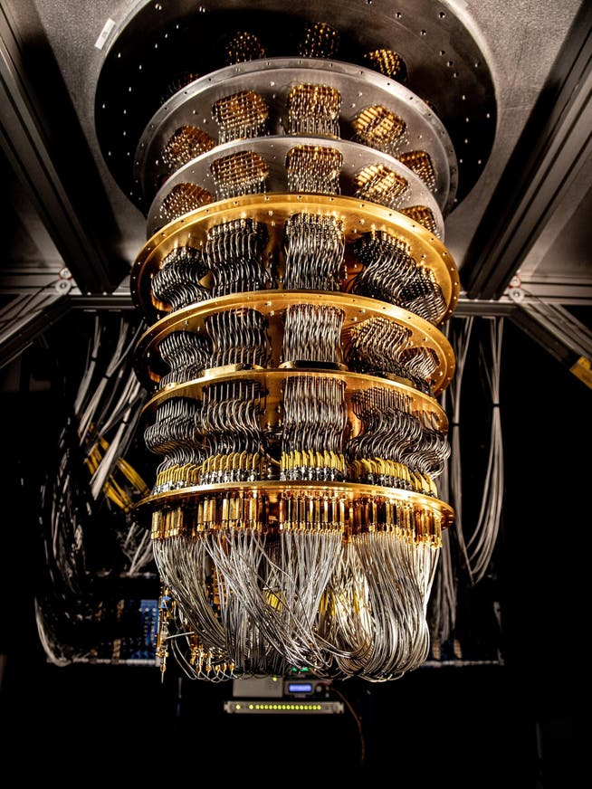

Definición:
La computación cuántica es una tecnología emergente que utiliza los principios de la mecánica cuántica para procesar información
mediante qubits en lugar de bits tradicionales. Gracias a propiedades como la superposición y el entrelazamiento, puede resolver ciertos problemas complejos mucho más eficientemente que los computadores clásicos, especialmente en áreas como la simulación molecular, la optimización, la criptografía y la inteligencia artificial.
Principios Generales:
Qubits
Mientras que un computador clásico utiliza bits con valores 0 o 1, un computador cuántico utiliza qubits, que pueden existir
en una combinación de ambos estados al mismo tiempo. Esta capacidad permite representar más información y explorar múltiples soluciones simultáneamenteSuperposición
La superposición permite que un qubit esté en varios estados a la vez hasta que es medido. Gracias a esta propiedad,
los computadores cuánticos pueden procesar muchas posibilidades en paralelo.Entrelazamiento Cuántico
El entrelazamiento conecta dos o más qubits de forma que el estado de uno depende del estado del otro, incluso si están separados físicamente.
Esto permite realizar cálculos coordinados con una eficiencia difícil de alcanzar para sistemas clásicos.Interferencia
La interferencia cuántica se utiliza para reforzar las respuestas correctas y cancelar las incorrectas dentro de un algoritmo cuántico,
ayudando a encontrar soluciones más eficientemente.Avances Recientes
Corrección de errores cuánticos
Uno de los mayores desafíos de la computación cuántica es la fragilidad de los qubits. En 2024, Google anunció resultados con su procesador Willow,
demostrando mejoras significativas en corrección de errores cuánticos. El trabajo mostró que, al aumentar el número de qubits físicos utilizados para proteger la información, la tasa de error disminuye de forma exponencial.Hacia computadoras cuánticas tolerantes a fallos
IBM continúa desarrollando arquitecturas y técnicas de corrección de errores para alcanzar sistemas cuánticos escalables y útiles en aplicaciones reales.
La empresa mantiene una hoja de ruta enfocada en lograr ventaja cuántica práctica mediante sistemas corregidos frente a errores.Incremento en número y calidad de qubits
La industria ha logrado avances constantes en la estabilidad, fidelidad y conectividad de los qubits. Empresas como IBM y Google han presentado
procesadores más potentes y confiables, acercando la tecnología a aplicaciones prácticas.Incremento en número y calidad de qubits
La industria ha logrado avances constantes en la estabilidad, fidelidad y conectividad de los qubits.
Empresas como IBM y Google han presentado procesadores más potentes y confiables, acercando la tecnología a aplicaciones prácticas.Aplicaciones Potenciales
Descubrimiento de medicamentos
Los computadores cuánticos podrían simular moléculas y reacciones químicas con gran precisión, acelerando el desarrollo de nuevos fármacos y tratamientos médicos.